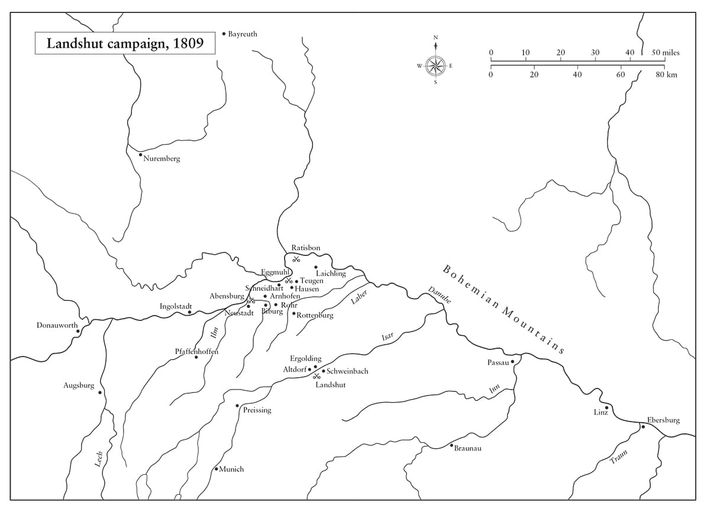
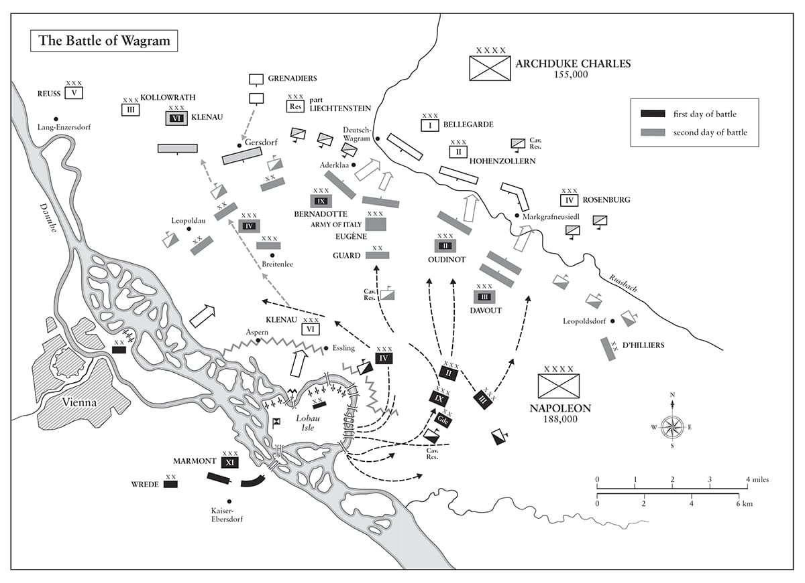

Nên thường xuyên bố trí pháo binh ở những vị trí thuận lợi nhất và xa nhất như có thể, trước chiến tuyến của kỵ binh và bộ binh mà không ảnh hưởng tới sự an toàn của các khẩu pháo.
• Tôn chỉ quân sự số 54 của Napoleon
Trước đại bác, tất cả mọi người đều bình đẳng.
• Napoleon nói với Tướng Bertrand, tháng Tư năm 1819
⚝ ✽ ⚝
“Triều đình Vienna đang cư xử rất tồi”, Napoleon viết cho Joseph từ Valladolid ngày 15 tháng Một năm 1809, “họ sẽ có lý do để ân hận. Đừng lo. Ta có đủ quân lính, ngay cả khi không động tới đạo quân của ta ở Tây Ban Nha, để tới Vienna trong một tháng… Trên thực tế, chỉ nguyên sự hiện diện của ta ở Paris sẽ hạ Áo xuống vị thế không đáng quan tâm như thường lệ của nó”. Ông không hề biết vào thời điểm đó Áo đã nhận được một khoản trợ cấp lớn của Anh để thuyết phục nước này thực hiện cuộc chiến sẽ trở thành Chiến tranh của Liên minh thứ Năm. Đại Công tước Charles đã khoác lên mọi nam giới khỏe mạnh từ 18 đến 45 tuổi bộ quân phục của lực lượng dân quân Landwehr mới, một số đơn vị thuộc lực lượng này không thể phân biệt được với quân đội chính quy. Ông ta đã tận dụng thời gian kể từ sau trận Austerlitz để áp đặt những cải cách triệt để trong quân đội Áo, hợp lý hóa cơ cấu chỉ huy, cải thiện các điều kiện tại ngũ, đơn giản hóa các động tác luyện tập đội ngũ, đưa ra phương pháp Bataillons-masse (*) để bảo vệ bộ binh chống lại kỵ binh bằng các đội hình vuông vững chắc hơn, hủy bỏ pháo binh cấp trung đoàn để thiết lập lực lượng pháo binh dự bị lớn hơn, thay đổi các chiến thuật quấy rối, thành lập chín trung đoàn Jäger(*) (một phần ba được trang bị súng trường) – và trên hết, áp dụng hệ thống quân đoàn. Đại Công tước đã tham gia viết một cuốn sách về chiến lược quân sự năm 1806, Grundsätze der Kriegkunst für die Generale (Nghệ thuật chiến tranh cho tướng lĩnh), và quyết tâm mang các ý tưởng của mình ra thử nghiệm.
Vào tháng Tư năm 1807, khi Talleyrand đề xuất với Napoleon rằng Áo nên được khuyến khích để yêu (aimer) Pháp và các thành tựu của nó, Napoleon đã trả lời, “ Aimer: ta thực sự không biết nghĩa của nó là gì khi áp dụng vào chính trị”. Đúng thế; quan điểm của ông về các vấn đề quốc tế phần lớn là tư lợi, dựa trên giả thiết rằng các quốc gia luôn ở trong tình trạng cạnh tranh liên tục. Napoleon hiểu rằng Áo muốn báo thù cho những sỉ nhục phải chịu ở Mantua, Marengo, Campo Formio, Lunéville, Ulm, Austerlitz và Pressburg, nhưng ông cảm thấy nước này sẽ thật ngu ngốc lúc phát động chiến tranh khi chỉ có Anh và Sicily là đồng minh, nhất là khi Anh không đề xuất góp quân. Ngược lại, Napoleon cầm đầu một liên minh bao gồm Italy, Bỉ, Thụy Sĩ, Naples, Hà Lan, Bavaria, Württemberg, Saxony, và Westphalia. “Phổ bị hủy diệt”, Đại sứ Áo tại Paris Metternich nói, tóm lược lại tình thế chênh lệch, “Nga là một đồng minh của Pháp, Pháp là bá chủ tại Đức”. Bất chấp việc đây không phải là thời điểm thuận lợi để Áo tuyên chiến, họ đã làm thế, trong một nỗ lực nữa nhằm giành lại vị thế của mình ở Italy và Đức. Cũng đúng thôi, vì không có khoảng thời gian hòa bình lâu dài nào sau năm 1805, khi mà các cường quốc châu Âu có thể làm suy kiệt Pháp, và phần lớn công lao này là nhờ vào sự bướng bỉnh của Áo.
Ngay khi đã chắc chắn về tin tình báo của mình, Napoleon thực hiện một chuyến đi gấp gáp từ Valladolid về Paris. Phi nước đại cùng Savary, Duroc, Roustam, một sĩ quan phụ tá và một toán khinh kỵ nhỏ, ông vượt qua quãng đường 112 km tới Burgos trong bốn tiếng, phần lớn qua vùng nông thôn có du kích. Thiébault thấy ông phi ngựa vượt qua xe mình “vừa quất roi vào ngựa của sĩ quan phụ tá vừa thúc gót giày vào ngựa của mình.’’ Ông rời đi lúc 7 giờ sáng 17 tháng Một và về Paris lúc 8 giờ sáng 23, sau khi vượt qua hơn 960 km trong sáu ngày, một kỳ công phi thường. “Trong khi tất cả nội các của các cường quốc Đồng minh tin rằng ông ấy đang tham gia các hoạt động tác chiến ở Bắc Tây Ban Nha”, Tướng Dumas ghi lại, “ông ấy đã trở về trung tâm của đế chế, tổ chức thêm một đạo quân lớn… và những người vốn trông đợi làm ông bất ngờ đã bị bất ngờ trước hành động khó tin này”. Sau này Napoleon so sánh giữa việc tiến hành chiến dịch ở Tây Ban Nha với Áo, mô tả người Áo với Davout như “một dân tộc thật tử tế, thật chừng mực, thật bình thản, thật rộng lượng, thật cách xa mọi sự thái quá, tới mức không có bất cứ trường hợp nào về người Pháp bị ám sát trong suốt cuộc chiến tranh ở Đức”, trong khi người Tây Ban Nha là những kẻ cuồng tín.
Ngay khi có mặt ở Paris, Napoleon ra lệnh cho cơ quan lập pháp, giờ đây là một bộ phận đã bị thu nhỏ lại và chỉ nhóm họp tổng cộng bốn tháng vào năm 1809 và 1810, gọi quân dịch năm 1810 sớm một năm, cho phép ông động viên 230.000 quân, đạo quân lớn nhất ông từng chỉ huy. Bên cạnh việc giúp ông luôn có được thông tin tốt nhất về dự định và hành động của Áo – Francis đã quyết định tuyên chiến vào ngày 23 tháng Mười hai và xác nhận điều đó vào tháng Hai – mạng lưới điệp viên của Napoleon còn cảnh báo ông về một sự xích lại gần nhau nguy hiểm giữa Talleyrand và Fouché, những người từng trong thời gian dài là kẻ thù không đội trời chung nhưng giờ lại đang âm mưu đưa Murat lên ngai vàng Pháp nếu Napoleon bị giết ở Tây Ban Nha. Việc Lavalette chặn bắt được những lá thư giữa bạn bè của Fouché và Talleyrand, được bổ trợ thêm bởi thông tin do Eugène cung cấp, cho Napoleon biết tất cả những gì ông cần biết. Vào chiều Thứ bảy 28 tháng Một, ông triệu tập Cambacérès, Lebrun, Decrès, Fouché và Talleyrand tới phòng làm việc của mình tại Tuileries để tung ra một màn chỉ trích kịch liệt hai người sau cùng kéo dài trong nửa tiếng (theo Pasquier, người nghe được câu chuyện từ Phu nhân de Rémusat do Talleyrand kể cho) hay hai tiếng (theo Mollien, người không có mặt song biết tất cả những người tham dự).
Napoleon phàn nàn rằng Fouché và Talleyrand đã chỉ trích chiến dịch Tây Ban Nha trong các phòng khách, bất chấp thực tế là nó đang diễn ra tương đối thuận lợi – Soult đã đánh bật người Anh khỏi bán đảo từ Corunna, giết chết Huân tước John Moore ngày 16 tháng Một. Họ cũng đã âm mưu chống lại quyền kế vị ngai vàng của Joseph bằng cách ủng hộ Murat, đồng nghĩa với việc họ đã phản bội lời thề trung thành với ông. “Sao nào”, Napoleon kết luận, nói với Talleyrand, “ông chẳng là gì ngoài một cục phân đi tất lụa”. Talleyrand vẫn hoàn toàn bình thản, lắng nghe “với vẻ ngoài vô cảm”, và kìm chế bản thân khi nói với một người bạn sau đó, “Thật đáng tiếc khi một người vĩ đại đến thế lại được dạy dỗ tệ như vậy”. Hai ngày sau cuộc tra vấn, Napoleon bãi chức Phó Đại tuyển hầu của Talleyrand, nhưng cho phép ông ta giữ lại các tước vị và danh hiệu khác, và không thể giải thích nổi, khi đã không lưu đày ông ta. Fouché cũng giữ được chân bộ trưởng của mình. Không lâu sau đó, Metternich trả cho một “ông X” khoảng 300.000 đến 400.000 franc để đổi lấy các thông tin chi tiết về bố trí lực lượng của Pháp; Talleyrand bị coi là đối tượng nghi vấn hàng đầu.
Metternich lưu lại Paris tới phút cuối cùng như có thể trước khi đòi lại hộ chiếu của mình, có lẽ để tiếp tục thu thập tin tình báo bí mật từ “ông X”. Như thường lệ, Napoleon đưa ra cho kẻ thù những lời cảnh cáo ghê gớm về những hậu quả của cuộc chiến tranh sắp diễn ra. Khi ông gặp Metternich ngay trước khi cắt đứt quan hệ ngoại giao ngày 23 tháng Ba, ông đã hỏi:
⚝ ✽ ⚝
Metternich phản đối bằng ngôn ngữ ngoại giao êm tai, nhưng Napoleon cắt ngang: “Những quan ngại của các vị đến từ đâu? Nếu chính là ông, thưa ông, người đã chuyển chúng tới triều đình của các vị, hãy nói ra, ta sẽ đưa ra mọi lời giải thích ông cần để trấn an họ… Thưa ông, ta đã luôn bị lừa bịp trong mọi giao dịch của ta với triều đình các vị; chúng ta cần nói chuyện thẳng thắn”. Cũng như với các cuộc Chiến tranh của Liên minh Thứ ba và Thứ tư, Napoleon không muốn hay không cần tới cuộc xung đột này, và rõ ràng là rất mong muốn tránh khỏi nó. Song một lần nữa, ông lại không sẵn sàng chấp nhận bất cứ thỏa hiệp nào để ngăn chặn chiến tranh, vì ông tự tin mình sẽ chiến thắng. Chỉ trong ngày 9 tháng Ba, ông gửi đi 29 lá thư chuẩn bị cho cuộc đụng độ sắp tới.(*)
•••
Kế hoạch của Đại Công tước Charles là dẫn tám quân đoàn tiến vào Bavaria, trong khi đồng thời điều một quân đoàn tới Ba Lan và hai quân đoàn tới Italy. Ông ta hy vọng vào một lời tuyên chiến từ Phổ và những cuộc nổi dậy đáng kể chống lại sự cai trị của Napoleon trên khắp lãnh thổ Đức, nhưng khi đã rõ là cả hai điều đó sẽ không xảy ra, ông ta bèn chuyển chủ lực của mình xuống phía nam sông Danube để che chở cho Vienna và giữ liên lạc với lực lượng của mình tại Italy. Điều này dẫn tới tình trạng vô cùng rối loạn trong đạo quân, khi các đơn vị phải hành quân ra đi rồi lại trở về trong vùng và bị mất đi thời gian quý báu. Khi Saragossa cuối cùng cũng thất thủ ngày 20 tháng Hai sau một cuộc chống cự anh dũng, Joseph được đưa trở lại Madrid hai ngày sau đó, và Napoleon có thể hoàn toàn tập trung vào mối đe dọa đang nhắm vào đồng minh Bavaria của ông.
Đến 30 tháng Ba, Napoleon đã phác ra toàn bộ chiến lược của ông cho Berthier, người được ông cử làm Tư lệnh Đạo quân Đức cho tới khi ông có thể đích thân tới nơi, vì biết rằng ông không thể trao cho Davout hay Masséna quyền chỉ huy người kia, bởi cả hai đều kiêu hãnh, thành công, đều là các thống chế hàng đầu vốn nghĩ họ ngang hàng nhau. Một đội hình hình vuông khổng lồ được thiết lập, kéo người Áo vào một cái bẫy đồ sộ khi họ tiến hành tấn công, điều được trông đợi sẽ diễn ra sau ngày 15 tháng Tư. Ở tiền quân, dọc theo sông Isar là quân đoàn Bavaria của Lefebvre gồm ba sư đoàn dưới quyền Thái tử Louis của Bavaria, Vương hầu Carl-Philipp Wrede và Bá tước Bernard Deroy, với Tướng Jean-Baptiste Drouet (sau này là Bá tước d’Erlon) làm Tham mưu trưởng. Lefebvre sẽ hội quân cùng quân đoàn của Lannes sau khi vị chiến tướng xuất sắc này trở về từ Tây Ban Nha. Bên cánh trái, giữa Bayreuth và Nuremberg là quân đoàn lớn của Davout gồm ba sư đoàn bộ binh, cùng một sư đoàn dự bị mới và một sư đoàn Đức mới, Sư đoàn Trọng Kỵ binh 2 và một lữ đoàn khinh kỵ, tổng cộng khoảng 55.000 quân và 60 khẩu pháo. Bên cánh phải là quân đoàn của Oudinot gồm bộ binh và khinh kỵ ở Pfaffenhoffen. Quân đoàn của Masséna tạo thành hậu quân ở quanh Augsburg. Kỵ binh Dự bị dưới quyền Bessières, gồm hai sư đoàn khinh kỵ và hai sư đoàn trọng kỵ binh, cùng Cận vệ Đế chế và quân Württemberg của Vandamme được tập trung tại Strasbourg. Tổng cộng, Đạo quân Đức gồm 160.000 quân và 286 khẩu pháo, các quân đoàn cách nhau một quãng đường hành quân tương đối ngắn, với Ratisbon (nay là Regensburg) là trục xoay trung tâm cho việc triển khai chúng. Nếu người Áo tấn công trước ngày 15 tháng Tư, Napoleon ra lệnh cho Berthier thay vì thế sẽ tập trung giữa Augsburg và Donauwörth.
Đáp lại đề nghị từ Napoleon giúp đỡ chống lại Áo theo các điều khoản của Hiệp ước Erfurt, Sa hoàng Alexander cử đi 70.000 quân do công tước Golitsyn chỉ huy, song họ chỉ vượt biên giới tiến vào vùng Galicia thuộc Áo gần Lemberg vào ngày 22 tháng Năm, và sau đó tránh mọi tiếp xúc với kẻ thù; họ chỉ chịu có hai thương vong trong suốt chiến dịch. Do đó, quân Áo chỉ phải điều lực lượng tối thiểu sang phía đông, và có thể tập trung gần như mọi thứ chống lại Napoleon, trước sự giận dữ sâu sắc của ông.
Áo chính thức tuyên chiến với Pháp và Bavaria ngày 3 tháng Tư, và Đại Công tước Charles (cho dù cá nhân ông ta phản đối việc tuyên chiến vì nghĩ rằng chiến tranh nổ ra quá sớm) ban bố một bản thông cáo quân sự dành cho dân chúng Áo vào ngày 6.(*) Bốn ngày sau, 127.000 quân Áo vượt sông Inn và tiến vào Bavaria, nhưng thay vì cho thấy tốc độ mà Đại Công tước Charles đã hy vọng, họ đã bị thời tiết xấu làm chậm lại chỉ còn 9,6 km một ngày, và đến ngày 15 mới tới sông Isar, cùng ngày Áo cũng tấn công Đại công quốc Warsaw. Những động thái đầu tiên trong chiến dịch của Pháp đã bị Berthier thực hiện một cách tồi tệ, ông ta đã hiểu nhầm các mệnh lệnh của Napoleon và hoảng hốt khi người Áo tấn công sớm hơn dự kiến năm ngày. Ngày 14 tháng Tư, ông ta điều quân đoàn của Davout tới tập trung tại Ratisbon thay vì Augsburg, và phân tán quân đội dọc theo sông Lech, 52.300 quân ở phía bắc và 68.700 người ở phía nam sông, rất nhiều đơn vị nằm ngoài tầm hành quân của nhau, trong khi một lực lượng lớn quân Áo tập trung tấn công vào Landshut. Sự bình tĩnh chỉ trở lại bản doanh ở Donauwörth khi Napoleon – sau khi được cảnh báo bằng truyền tín hiệu vào ngày 12 tháng Tư rằng quân Áo đã vượt sông Inn – tới nơi năm ngày sau đó.(*) “Hỡi binh lính!” ông tuyên bố. “Ta tới cùng các bạn với sự lanh lẹ của đại bàng.”
“Berthier đã đánh mất cái đầu của ông ta khi tôi tới chủ trì cuộc chiến”, Napoleon sau này nhớ lại. Đúng vậy, nhưng ngay khi ông tới Donauwörth và phát hiện ra lực lượng của mình bị phân tán một cách tệ hại ra sao, ông cũng thấy cuộc tấn công vào Landshut của người Áo vừa là một nguy cơ vừa là một cơ hội: các quân đoàn của ông giờ đây có thể đồng thời tấn công vào Đại Công tước Charles từ nhiều hướng. Masséna và Oudinot được lệnh tiến tới Landshut để đe dọa các tuyến liên lạc của địch; Vandamme và Lefebvre được điều tới Abensberg; Davout được lệnh hội quân với chủ lực qua một cuộc hành quân nhọc nhằn dài 128 km, để lại một lực lượng đồn trú thuộc Trung đoàn bộ binh 65 dưới quyền chỉ huy của em họ vị thống chế, Đại tá-Nam tước Louis Coutard, nhằm giữ cây cầu tại Ratisbon. Những mệnh lệnh này quan trọng tới mức Napoleon đã cử bốn sĩ quan phụ tá mang đi từng mệnh lệnh, thay vì ba người như thường lệ. Masséna được lệnh nhanh chóng tiến tới Pafaffenhoffen và tấn công vào sườn địch, trong khi đảm bảo Augsburg được giữ vững như một căn cứ tác chiến bất khả xâm phạm.
Đến 18 tháng Tư, người Áo nhận ra họ không phải đang truy kích một kẻ địch tháo chạy như họ đã hình dung về vị thế của mình, mà thay vì thế đối mặt với một đối thủ đang hồi sinh. Napoleon đang trên đường tới Ingolstadt với Lannes bên cạnh, cổ vũ những người lính Đức của ông khi đi qua họ. Một đại tá thuộc Bộ Tổng tham mưu Áo bị bắt hôm đó và giải tới trước mặt Napoleon để thẩm vấn. Khi ông ta từ chối trả lời, Hoàng đế nói, “Đừng lo, thưa ông, dù sao ta cũng biết mọi thứ rồi”, rồi sau đó ông nhanh chóng mô tả chính xác vị trí của tất cả các quân đoàn Áo và kể cả các trung đoàn đang đối mặt với ông. “Tôi đang có hân hạnh được nói chuyện với ai đây?” viên sĩ quan Áo bị gây ấn tượng liền hỏi. “Đến đây”, Chlapowski nhớ lại, “Hoàng đế đích thân cúi người ra trước, đưa tay chạm lên mũ và trả lời, ‘Monsieur Bonaparte.’” (Viên đại tá hẳn phải quan sát cực kỳ kém, vì như Chlapowski ghi nhận, trong suốt cuộc thẩm vấn, bộ binh Pháp liên tục hô vang “Hoàng đế muôn năm!” khi họ hành quân qua.)

Tối đó, Napoleon viết cho Masséna giải thích rằng Charles “đã từ Landshut tiến tới Ratisbon với ba quân đoàn, ước tính khoảng 80.000 quân. Davout, rời khỏi Ratisbon, đang hành quân về phía Neustadt… kẻ thù coi như thất bại nếu quân đoàn của ông, xuất phát trước rạng đông theo đường Pfaffenhoffen, ập vào sau lưng Đại Công tước Charles. Do đó, trong các ngày 18, 19 và 20, toàn bộ vấn đề về Đức sẽ được định đoạt”. Bằng chính nét chữ viết tay của mình, Napoleon viết một dòng tái bút như sau: “Activité, activité, vitesse! Je me recommande à vous” . (Hành động, hành động, thật khẩn trương! Ta trông cậy vào ông.) Masséna trả lời, hứa rằng sẽ hành quân suốt đêm nếu cần thiết, và làm đúng như lời nói; sự can đảm và ngoan cường của ông ta trong suốt chiến dịch này thật phi thường. Đại Công tước Charles, người đã nhận được các báo cáo rằng Davout đã lui về phía nam sông Danube với khoảng 30.000 quân, muốn tiêu diệt quân đoàn của vị thống chế ở vị trí bị cô lập khỏi phần còn lại của đạo quân của Napoleon, giống như Bennigsen đã hy vọng làm với Lannes tại Friedland. Ông ta rõ ràng đã quên mất những gì mà quân đoàn của Davout một mình đạt được ở Auerstädt ba năm trước.
Cuộc giao chiến thực sự đầu tiên của chiến dịch diễn ra hôm sau đã định hình nên nét đặc trưng cho toàn bộ chiến dịch, khi Davout thành công trong việc tránh bị tiêu diệt dưới tay Đại Công tước Charles tại các làng Teugen và Hausen phía hạ lưu sông Danube và an toàn hội quân với Napoleon. Dưới bầu trời thấp đầy mây, hai đạo quân, đều không chắc chắn về đối phương, chạm trán trên địa hình đồi, tại đó quân Áo chiến đấu một cách chậm chạp và cứng nhắc trong khi các chiến binh kỳ cựu của Davout tác chiến một cách khéo léo. Quân Áo rút lui về phía đông sau khi thất bại, cho phép Napoleon tổ chức một cuộc truy kích. Cùng ngày, Lefebvre thắng trong cuộc đụng độ tại Arnhofen, và Montbrun thắng tại Schneidhart. Cho dù trên chiến trường Charles có 93.000 quân so với 89.000 của Napoleon, nhưng thế chủ động giờ đây nghiêng hẳn về phía Pháp-Bavaria.
Kế hoạch của Napoleon là cắt đứt đường rút lui về Vienna của Charles và bẫy ông ta tại Bavaria. Với Davout bên cánh trái, Lefebvre và Lannes ở trung tâm, và Oudinot bên cánh phải, Napoleon lệnh cho Masséna phái tiếp viện tới Abensberg song lại hướng chủ lực của mình tới Landshut, tấn công vào các tuyến liên lạc của quân địch. Ngày 20 tháng Tư, Đại tá Coutard giấu các quân kỳ của mình đi và đầu hàng tại Ratisbon. Bị áp đảo nặng nề về số lượng, ông ta đã cầm cự được trên 24 tiếng và khiến địch bị thương vong gấp đôi so với số thương vong đơn vị ông ta phải chịu. Cùng ngày, Napoleon thực hiện cuộc tấn công liên tục trên một mặt trận rộng theo một chuỗi các xóm nhỏ nằm ở bờ nam sông Danube, cách Ingolstadt 32 km về phía đông. Ông đã thức dậy lúc 3 giờ sáng, gửi các mệnh lệnh tới Lefebvre, Masséna và Vandamme, và tới 6:30, ông cùng Lannes và Bessières phi ngựa tới Abensberg. Trên một sườn đồi sau này được gọi là Napoleonshöhe(*) bên ngoài thành phố, Napoleon đã có bài phát biểu sôi nổi trước các sĩ quan thuộc quân đoàn Bavaria, được Thái tử Ludwig của Bavaria dịch lại cho ông và công bố như một bản nhật lệnh:
⚝ ✽ ⚝
Sau đó, ông tung ra những cuộc tấn công theo hai trục, một về phía đông nam từ Abensberg và Peissing hướng tới Rohr và Rottenburg, và một trục thứ hai theo hướng đông nam từ Biburg tới pfeffenhausen. Những người Áo có vị trí thuận lợi và quân số tương đương đã chiến đấu xuất sắc trong phần lớn ngày hôm đó, nhưng ngay khi Napoleon biết cánh trái của ông dưới quyền Lannes đang có tiến triển, từ Napoleonshöhe ông đã cưỡi ngựa lên phía trước để giám sát cuộc tấn công.
Sau trận đánh, chỉ huy Chi đội 2 khinh kỵ trình lên Napoleon hai lá quân kỳ Áo chiếm được, những lá quân kỳ đầu tiên của địch trong chiến dịch, trong khi máu trào ra từ một vết kiếm chém trên khuôn mặt anh ta. Napoleon hỏi tên anh ta, một cái tên thật huy hoàng Dieudonné Lion. “Ta sẽ nhớ anh và anh sẽ thấy điều đó”, Napoleon nói với anh ta, “anh được khắc dấu ấn rất rõ ràng”. Nhiều tháng sau, khi Berthier đề xuất một người để trám vào vị trí còn trống trong khinh kỵ Cận vệ, Napoleon ngần ngừ, nói ông muốn dành vị trí này cho Lion.
Napoleon tin rằng ông đang truy kích theo chủ lực địch về phía Landshut, trong khi trên thực tế Đại Công tước Charles đang hướng tới Ratisbon. Hai đơn vị quân Áo lớn theo đội hình hàng dọc dưới quyền chỉ huy của Nam tước Johann von Hiller cùng đổ về Landshut, gây ra tắc nghẽn lớn ở gần hai cây cầu. Pháo binh Pháp dưới quyền Tướng Jacques de Lauriston (người, cũng như nhiều chỉ huy cao cấp khác của Napoleon, đã được điều về từ Tây Ban Nha) được triển khai trên chỏm núi nằm giữa Altdorf và Ergolding, xối lửa đạn xuống thành phố đông nghẹt. (Ngày nay đứng trên cầu ở Landshut có thể thấy chẳng có mấy vị trí để từ đó người Áo có thể tổ chức phản pháo.) Sau khi quân Áo đã qua cầu, họ cố gắng đốt cầu, nhưng một cơn mưa không ngừng đã trút xuống dập tắt ngọn lửa. Đến 12:30, Napoleon quay sang sĩ quan phụ tá của mình, Tướng Georges Mouton, và nói: “Hãy dẫn đầu một cánh quân và chiếm lấy thành phố.”
Vào lúc đó, điều này hẳn có vẻ giống một án tử hình, song Mouton đã dẫn đầu những người lính thủ pháo trong một đợt xung phong, được yểm trợ bởi làn đạn hỏa mai dày đặc từ phía bờ hòn đảo. Lính công binh của ông ta phá cổng thành phố bằng rìu, binh lính thuộc Trung đoàn khinh binh 13 cùng ba tiểu đoàn và hai chi đội lính Bavaria với một số đơn vị Württemberg cũng tham gia tấn công; tới 1 giờ chiều, Landshut thất thủ. Đại Công tước Charles mất gần 5.000 người, 11 khẩu pháo và toàn bộ xe hậu cần, gồm tới 226 chiếc. Napoleon sau này tặng cho Mouton một bức tranh tuyệt đẹp vẽ lại cảnh xung phong qua cầu, và chơi chữ một cách vụng về không đặc trưng cho tính cách của ông về việc “chú cừu” (mouton) của ông là một con sư tử. “Nhận được món lưu niệm này từ Napoleon còn giá trị hơn những lời tán dương cao nhất”, một sĩ quan phụ tá khác nói về bức tranh, và khi chiến dịch kết thúc, Mouton đã được phong là Bá tước de Lobau.(*)
Cũng như vào năm 1806, chỉ sau trận đánh Napoleon mới phát hiện ra rằng “Thống chế Sắt” Davout đã đối đầu với chủ lực địch, lần này tại Laichling, nơi vị thống chế đã thành công trong việc giữ khoảng cách với Đại Công tước Charles. Davout gửi cho Napoleon bốn tin nhắn từ lúc 7 giờ sáng tới 5 giờ chiều 21 tháng Tư, báo cáo ông rằng Charles đang điều động lực lượng dự bị cho một cuộc phản kích quy mô lớn. Từ 2 giờ sáng 22, Napoleon hoạt động với cường độ cao, lệnh cho Lannes, Vandamme, Saint-Sulpice cùng 20.000 bộ binh và 5.500 kỵ binh tiến về phía bắc sớm nhất như có thể. Oudinot và phần còn lại của lực lượng Bavaria đã được lệnh tới hội quân cùng Davout, như vậy trong vòng một tiếng Napoleon có 50.000 bộ binh, 14.000 kỵ binh và 114 khẩu pháo áp sát Đại Công tước Charles.
Vào ngày 22, Napoleon giao chiến với Charles trong trận Eggmühl, điểm kết thúc của Cuộc điều binh Landshut, nơi hệ thống quân đoàn một lần nữa lại đem tới chiến thắng. Quân đoàn của Davout đã kìm chân 54.000 quân Áo và 120 khẩu pháo, nhưng Charles trì hoãn cuộc tấn công của mình cho đến khi quân đoàn của Tướng Johann Kollowrath tới nơi từ Ratisbon cách đó 24 km về phía bắc, cho Napoleon thời gian điều động gấp Lannes và Masséna hành quân 40 km từ Landshut tới ứng cứu cho Davout. Khi Charles thấy kỵ binh Bavaria và Württemberg tới chiến trường, buộc một trong các sư đoàn của ông ta phải lui về các cao điểm phía sau thành phố, ông ta liền bãi bỏ toàn bộ cuộc tấn công. Napoleon tới chiến địa cùng các quân đoàn của Lannes và Masséna ngay sau 2 giờ chiều và ập vào cánh trái quân địch. Chiến thắng được định đoạt với người Áo bị tổn thất trên 4.100 người và mất 39 khẩu pháo so với 3.000 người của Napoleon. Ông đã phong Davout làm Vương hầu d’Eckmühl sau đó không lâu.
Cùng quân đội, nói chung ta thường di chuyển trên một cỗ xe ngựa vào ban ngày với một chiếc áo choàng dày, tốt vì ban đêm là lúc một tổng tư lệnh cần làm việc”, Napoleon nói nhiều năm sau đó. “Nếu anh ta làm mình mệt một cách vô ích ban ngày, anh ta sẽ quá mệt mỏi để làm việc buổi tối… Nếu ta ngủ vào đêm trước trận Eggmühl, ta đã không bao giờ có thể thực hiện được cuộc điều binh siêu hạng đó, điều tuyệt nhất ta từng làm được… Ta đã nhân mình lên nhiều lần bằng hoạt động của bản thân. Ta đánh thức Lannes dậy bằng cách đá anh ta liên tiếp; anh ta đã ngủ rất say”. Napoleon yêu mến Lannes hơn bất cứ thống chế nào khác – sau cái chết của Desaix, Lannes và Duroc là những người bạn thân nhất của ông – và chấp nhận những lời đùa cợt từ anh ta mà hẳn ông sẽ không chấp nhận từ những người khác. Lannes đi xa tới mức nói rằng “mình thật đáng thương vì đã có một niềm đam mê bất hạnh đến thế dành cho gã điếm này [cette catin] ”, tức Napoleon. Như Chaptal nhớ lại: “Hoàng đế phá lên cười trước những câu đùa cợt đó vì ông biết rằng mình sẽ luôn thấy vị thống chế này có mặt khi ông cần đến anh ta.
•••
Chiến thắng của Pháp tại Eggmühl buộc quân Áo phải lùi về Ratisbon trong hỗn loạn nhằm hy vọng đào thoát qua sông Danube. Tới Ratisbon ngày 23 tháng Tư, Napoleon loại bỏ chuyện vây hãm vì quá mất thời gian, và thay vào đó kiên quyết công kích thành phố bằng cách dùng thang – những chiếc thang được dựng lên cách nhau 20 bước chân áp vào tường thành – và thành công sau lần tấn công thứ ba. Cây cầu đá vững chãi rộng 9 m là đường thoát duy nhất của Charles. Đây là – và vẫn là – một trong những cây cầu lớn bắc qua sông Danube, với sáu trụ lớn bằng đá, và khó lòng bị phá hủy bởi đại bác. Charles vượt qua cầu tới được nơi an toàn, song mất thêm 5.000 người và tám khẩu pháo trong lúc qua sông. Ở gần nơi ngày nay là đường xe lửa, Napoleon bị một viên đạn lạc bắn trúng mắt cá chân phải, gây ra một vết thương. Ông ngồi trên một chiếc trống trong khi vết thương được Yvan băng bó, một cái lỗ được khoét trên chiếc ủng của ông để vết thương không gây đau nhiều khi ông cưỡi ngựa. Để không làm mất tinh thần binh lính, ngay khi vết thương được băng bó xong, ông “cưỡi ngựa xuống trước toàn bộ hàng quân, giữa tiếng reo hò vang dội”. Sau đó trong trận đánh, ông nói, “Hình như các viên đạn đang thám thính chúng ta?” Ngày 6 tháng Năm, ông trấn an Josephine. “Viên đạn bắn trúng anh không hề làm anh bị thương. Nó chỉ sượt qua bên gân Achilles của anh.”
Sau trận Ratisbon, một người lính kỳ cựu đề nghị với Napoleon muốn được trao chữ thập Binh đoàn Danh dự, nói rằng anh ta đã mang cho ông một quả dưa hấu tại Jaffa khi trời “nóng khủng khiếp”. Napoleon từ chối anh ta bởi một cái cớ tầm thường như vậy, lập tức người lính kỳ cựu liền nói thêm đầy phẫn nộ, “Được lắm, chẳng lẽ ngài không đếm xỉa đến bảy vết thương nhận được trên cầu Arcole, tại Lodi và Castiglione, tại trận Kim tự tháp, tại Acre, Austerlitz, Friedland; 11 chiến dịch ở Italy, Ai Cập, Áo, Phổ, Ba Lan…” tới đây Hoàng đế phá lên cười cắt ngang và tặng cho anh ta huân chương Hiệp sĩ của Binh đoàn kèm theo khoản trợ cấp 1.200 franc, cài chữ thập lên ngực anh ta ngay tại chỗ. “Chính nhờ những hành động thân mật kiểu này mà Hoàng đế đã khiến binh lính tôn thờ mình”, Marbot lưu ý, “nhưng đó là cách chỉ có ở một vị tư lệnh lừng lẫy với những chiến thắng liên hoàn: những vị tướng khác sẽ gây hại cho tiếng tăm của mình nếu làm thế.”
Những chiến thắng hiếm khi đến dồn dập như trong bốn ngày kế tiếp ở Abensberg, Landshut, Eggmühl, và Ratisbon. Ngày 24, đạo quân nghỉ ngơi, và Hoàng đế gặp gỡ một số sĩ quan. Đại úy Blaze ghi lại cuộc trò chuyện giữa Napoleon với một đại tá, người rõ ràng là nắm vững tình hình quân số trung đoàn của mình:
Có bao nhiêu người có mặt?
84, tâu bệ hạ.
Bao nhiêu người gọi quân dịch năm nay?
22.
Bao nhiêu lính đã tại ngũ bốn năm?
65.
Bao nhiêu người bị thương hôm qua?
18.
Còn tử trận?
10.
Với lưỡi lê?
Vâng, tâu bệ hạ.
Tốt.
⚝ ✽ ⚝
Tất cả những ai chiến đấu bằng lưỡi lê được coi là dũng cảm nhất, và sau một cuộc chiến ngày 3 tháng Năm, Napoleon vui mừng khi người lính dũng cảm nhất của Trung đoàn khinh binh 26 lại mang tên Hạ sĩ-Xạ thủ Bayonnette,(*) người được ông tặng huân chương Hiệp sĩ của Binh đoàn cùng một khoản trợ cấp.
Khi Napoleon tới cửa ngõ Vienna ngày 10 tháng Năm năm 1809, sĩ quan phụ tá người Ba Lan Adam Chlapowski của ông
⚝ ✽ ⚝
Napoleon dành nửa tiếng cưỡi ngựa vòng quanh tường thành phòng thủ của Vienna “và thỉnh thoảng lại nhấc mũ lên để đáp lại những lời hoan hô, như thể ông đang cưỡi ngựa đi quanh Paris”. Ông có một đội hộ tống chỉ gồm 25 kỵ binh đi cùng. Quay về phía cung điện Schönbrunn ở bên ngoài thành phố, nơi ông sẽ nghỉ lại như từng làm năm 1805, ông nói với Chlapowski: “Một chiếc giường đã được chuẩn bị cho cậu ở đó. Cậu đã trải qua quá nhiều đêm trên lưng ngựa, giờ đã đến lúc cậu được nghỉ ngơi tận hưởng sự mến khách của Hoàng đế Francis.”
Sau một cuộc pháo kích rất ngắn, Vienna đầu hàng Napoleon lúc 2 giờ sáng 13 tháng Năm, đến lúc này Đại Công tước Charles – sau khi đã phá hủy hết các cây cầu – đang ở bờ phải sông Danube, khi đó có một dòng chảy rất khác, rộng hơn nhiều so với dòng sông bình lặng và có nhiều kênh đào thông vào như ngày nay. “Những ông hoàng của triều đại này đã từ bỏ thủ đô của họ”, Napoleon tuyên bố trong bản thông cáo hôm đó, “không như những người lính có danh dự nhường bước trước hoàn cảnh và bất lợi của chiến tranh, mà như những kẻ bội ước bị chính sự ăn năn của chúng truy đuổi”. Dẫu vậy, trong khi ông không ngần ngại trách cứ nhà Habsburg, ông lại không muốn người Vienna, vốn đã hứa sẽ tự quản lý an ninh cho thành phố, xa lánh mình. “Tất cả những kẻ rã ngũ lấy cớ mệt mỏi đã rời khỏi đơn vị của mình để cướp bóc”, ông ra lệnh vào ngày 14, “sẽ bị bắt lại, xét xử trước tòa án của cảnh binh, và hành quyết trong vòng một tiếng”. Mỗi cánh quân có một tòa án được thành lập để trừng phạt những kẻ cướp bóc.
Binh lính của Napoleon mất ba ngày để bắc một chiếc cầu phao ở phía hạ lưu của Vienna, qua đó ông có thể vượt sông để tấn công quân đội Áo. Vào 5 giờ chiều 18 tháng Năm, sư đoàn bộ binh của Tướng Gabriel Molitor bắt đầu vượt sông Danube bằng thuyền. Họ tới hòn đảo Lobau rộng 3,2 km, từ đây họ bắt đầu bắc những cây cầu chắc chắn hơn sang bờ sông phía đối diện. Napoleon sau đó đã bị chỉ trích vì không cho bắc những cây cầu đủ vững chãi, nhưng có rất ít kỹ sư chuyên ngành trong đạo quân của ông, và đây lại là một dòng sông chảy xiết, đồng thời quân Áo liên tục thả những thân cây và các loại mảnh vỡ khác xuôi theo dòng – có lần cả một chiếc cối xay nước đã bị dỡ tung ra – để phá hoại các cây cầu.
Thêm một lần nữa, cũng như tại Austerlitz và ở Ba Lan, Napoleon đang ở tận cùng của con đường tiếp tế rất dài, vào sâu trong lãnh thổ địch, chiến đấu với một đối thủ không chịu đề nghị hòa bình khi thủ đô của họ đã bị thất thủ. Một đạo quân Áo dưới quyền Đại Công tước Johann von Habsburg – em trai của Hoàng đế Francis và Đại Công tước Charles – giờ đây đang quay về từ Italy, sau khi đã bị Eugène đánh bại trong trận đánh bên sông Piave ngày 8 tháng Năm. Vùng Tyrol đang nổi dậy chống lại Bavaria dưới sự lãnh đạo của vị thủ lĩnh đầy uy tín Andreas Hofer. Giữa những người Đức căm ghét sự thống trị của Pháp đang hiện hữu sự bất bình, và chiến lược của Đại Công tước Charles dường như được thiết lập để từ chối Napoleon một trận quyết chiến. Thế nhưng đến cuối buổi chiều ngày 19, một cây cầu dài 754 m, được bắc trên 86 chiếc thuyền và chín chiếc bè, đã vươn qua sông Danube, và đến trưa hôm sau đạo quân đã qua cầu sang đảo Lobau với lực lượng lớn. Một cây cầu khác, dài 91 m, nằm trên 15 thùng phao và ba bộ trụ đỡ vừa chiếm được, vươn tới tận bờ sông đối mặt. Trông nó rõ ràng rất ọp ẹp, song Napoleon quyết định mạo hiểm vượt sông.
•••
Các ngôi làng Aspern và Essling nằm cách nhau 4,8 km ở bờ phía đông bắc sông Danube, cách Vienna hơn 35 km về phía đông. Vào nửa đêm ngày 20 tháng Năm, Masséna leo lên tháp chuông nhà thờ tại Aspern, và khi thấy tương đối ít đống lửa trại, đã báo cáo với Napoleon rằng quân Áo đang rút lui, trong khi trên thực tế họ đang tập hợp đội hình để tấn công. Đó là sai lầm tương tự như sai lầm Murat đã phạm phải vào buổi sáng diễn ra trận Eylau. Napoleon vượt sông lúc rạng sáng Chủ nhật 21 tháng Năm, và thể hiện sự lo xa đặc trưng của mình khi lập tức ra lệnh củng cố các tuyến phòng ngự của khu vực đầu cầu. Thật không may, Masséna đã không tổ chức phòng ngự tại Aspern một cách chu đáo, nhiều khả năng vì cho rằng điều đó không cần thiết nếu Đại Công tước Charles đang rút lui. Đến 8 giờ sáng, tình hình đã rõ là ông ta không hề rút lui.
Vào năm 1809, Aspern có 106 ngôi nhà hai tầng với những khu vườn có tường bao chạy theo hướng đông – tây dọc theo hai con đường với một vài đường ngang, một nhà thờ cùng nghĩa địa với tường bao cao tới ngực (ngày nay nhà thờ là bảo tàng), một tòa nhà vững chãi là nơi ở của cha xứ và một khu vườn rộng trên khoảnh đất hơi nhô lên ở đầu làng phía tây. Một bờ đất chạy dọc theo con đường tới Essling – và bây giờ vẫn vậy – ngôi làng có 56 ngôi nhà nằm tách thành hai dãy ở hai bên quảng trường của làng, và một kho ngũ cốc lớn với tường đá dày gần 1 m. Napoleon dự định sử dụng hai ngôi làng này và con đường nối giữa chúng như các pháo đài, trong khi tổ chức cuộc tấn công của mình qua vùng Marchfeld bằng phẳng nằm xa hơn sau hai ngôi làng. Khu vực đó bằng phẳng tới mức đã được quân đội Áo sử dụng làm nơi duyệt binh.
Trong đêm, mực nước sông Danube đã dâng lên thêm gần 1 m, và đến 10 giờ sáng cây cầu phao nằm xa nhất về phía bắc đã bị một chiếc bè lớn đâm vào làm sập mất. Người Pháp sửa chữa nó kịp thời để trọng kỵ binh của Tướng Jean d’Espagne qua sông, từng chi đội phải xuống ngựa để đi bộ qua. Napoleon, có mặt ở ngay phía đông Aspern, đã cân nhắc tới việc rút lui khi ông biết được việc cây cầu bị hư hại, vì một trong những quy tắc tối quan trọng trong chiến tranh là không bao giờ giao chiến khi có một con sông sau lưng mình, song các tướng lĩnh của ông (trừ Berthier giữ im lặng) cam đoan với ông là họ có thể đứng vững. Đến 1 giờ chiều, ông được báo cáo là có một đạo quân lớn của Áo đang trên đường vượt qua Marchfeld, điều đáng lẽ ông phải biết sớm hơn nếu như việc thu thập tin tức của khinh kỵ mà ông phái đi không bị các toán xạ thủ quấy rối của Áo ngăn chặn. Số quân tham gia thật đáng lo ngại: khoảng 37.000 quân Áo tấn công vào Chủ nhật ngày 21 tháng Năm, và đến hôm sau là 83.000 quân với 292 khẩu pháo. Khoảng 30.000 quân Pháp đã vượt sông hôm Chủ nhật, và thêm 20.000 quân nữa vào hôm sau, nhưng họ chỉ có 58 khẩu pháo. Nếu quân đoàn của Davout đã có thể qua sông Danube được, thì những con số so sánh không chút hứa hẹn này hẳn đã cân bằng hơn, song tình trạng của các cây cầu vào lúc này đã loại trừ khả năng đó.
Cuộc đụng độ đầu tiên diễn ra vào khoảng 1-2 giờ chiều tại Aspern, tại đây 5.000 quân phòng thủ của Pháp phải chống lại lực lượng tấn công đông hơn rất nhiều. Pháo binh Pháp trừng phạt các đội hình tấn công, và một tiểu đoàn thuộc Trung đoàn bộ binh 67 đứng sau tường nghĩa địa tung ra một loạt đạn khủng khiếp. Nhưng quân Áo vẫn xông lên không nao núng, giao chiến khốc liệt diễn ra trên các con đường làng. Những đám khói thuốc súng dày đặc càng làm cho cuộc giao chiến thêm dữ dội. Sau 3 giờ chiều, pháo đội Áo gồm 90 khẩu bắn phá ngôi làng, thổi bay các công sự ngoại vi.
Napoleon theo dõi diễn biến trận đánh trong khi ngồi trên một cái trống ở một hõm trũng nhỏ gần nơi ngày nay là xưởng ngói Aspern, nằm giữa hai ngôi làng. Ông lệnh cho Bessières sử dụng bốn sư đoàn để làm chủ trung tâm – một vai trò tương tự như Murat đã làm tại Eylau – việc này được thực hiện sau bốn đợt xung phong quy mô lớn của kỵ binh. Trong khi các đợt xung phong tiến lên, Napoleon tập trung pháo binh lại để giúp phòng thủ Aspern bằng cách trừng phạt kỵ binh Áo tới quá gần. Đến 4:30 chiều, một đợt tấn công của Áo với ba đội hình hàng dọc sau một cuộc pháo kích dữ dội đã đánh bật lực lượng phòng thủ ra khỏi nhà thờ và nghĩa địa. Một tiếng sau, sư đoàn của Legrand được lệnh vào trận, và Trung đoàn khinh binh 26 cùng Trung đoàn bộ binh 18 đã chiếm lại Aspern, nhưng nửa tiếng sau đích thân Đại Công tước Charles đi cùng cuộc tấn công của sáu tiểu đoàn, thêm 13 tiểu đoàn nữa yểm trợ, ông ta hô lớn: “Vì tổ quốc! Hãy dũng cảm tiến lên!” (Nghe nói ông ta đã đích thân cầm một lá quân kỳ, song sau này ông ta đã bác bỏ chuyện đó.) Nhà thờ và nghĩa địa bị tấn công trong khi ngôi làng bắt lửa và quân Pháp bị đánh bật ra.
Bất chấp vài sự cố sập cầu nữa, Tướng Claude Carra Saint-Cyr thuộc Quân đoàn 4 của Masséna – không có quan hệ họ hàng gì với Gouvion Saint-Cyr – đã đưa sư đoàn mình qua sông Danube thành công và hối hả vận động tới Aspern, chiếm lại rìa phía nam ngôi làng. Giao chiến tiếp diễn cho tới tận 9 giờ tối. Khoảng 8.000 quân Áo và 7.000 quân Pháp qua đêm ở đó, trong khi cây cầu được sửa xong lúc 10 giờ đêm. 14 tiểu đoàn Cận vệ, quân đoàn của Lannes và đủ đại bác để cho phép Napoleon có tổng số 152 khẩu pháo giờ đây đã được đưa qua sông Danube thành công, nhưng quân đoàn của Davout thì vẫn chưa. Người Áo đã tấn công làng Essling và kho ngũ cốc gần như bất khả xâm phạm tại đây (nơi vẫn có thể thấy những lỗ đạn trên cánh cửa gỗ) vào lúc 4:40 chiều. Lannes đích thân chỉ đạo việc phòng thủ – khoét các lỗ châu mai, tìm vị trí đặt pháo, đặt chướng ngại vật trên các đường phố, đục lỗ bắn trên các bức tường – cho tới khi giao chiến ngừng lại lúc 11 giờ đêm.
Ngày thứ hai bắt đầu vào lúc 3:30 khi các Trung đoàn bộ binh 18 và 4 của Masséna xông vào làng Aspern trong đội hình hàng dọc theo hai con đường chính, được Trung đoàn khinh binh 26, Trung đoàn bộ binh 46, và lực lượng Jäger Baden yểm trợ. Phần lớn ngôi làng được giành lại lúc 4 giờ sáng, nhưng nhà thờ thì chưa. Giao chiến kéo dài tới lúc bình minh, và đến 7 giờ sáng, Masséna báo cáo với Napoleon là ông ta đã giành lại được toàn bộ ngôi làng sau khi chứng kiến nó bị đổi chủ bốn lần nhưng tới 11 giờ sáng người Áo đã lại chiếm được phần lớn ngôi làng. Tại Essling, lực lượng Cận vệ Trẻ đã xông vào làng kịp lúc để ngăn nó bị thất thủ.
Khoảng 6-7 giờ sáng, Napoleon đã sẵn sàng tung ra một cuộc tấn công lớn với ba sư đoàn gồm các tiểu đoàn sử dụng đội hình hàng dọc chặt chẽ. Lannes chỉ huy bên cánh phải với sư đoàn của Saint-Hilaire, Oudinot ở trung tâm và Tướng Jean Tharreau bên cánh trái. Đằng sau họ là khinh kỵ của Tướng Antoine de Lasalle và trọng kỵ binh của Nansouty. Cho dù được che chắn bởi sương mù lúc sáng sớm, nhưng pháo binh Áo tập trung bắn dày đặc đã gây tổn thất nghiêm trọng cho họ. Những hành động dũng cảm cao độ đã diễn ra. Có lúc, Saint-Hilaire ra lệnh cho Trung đoàn bộ binh 105 dùng lưỡi lê tấn công một trung đoàn giáp kỵ Áo, buộc họ phải lui về vị trí của lực lượng thủ pháo dự bị đằng sau mình. Đến 9 giờ sáng, quân Pháp chỉ còn rất ít đạn và thuốc súng, vì các xe chở đạn không thể qua cầu được, và cuộc tấn công chững lại sau khi Saint-Hilaire – người đã được hứa hẹn một cây gậy thống chế – bị mất bàn chân vì một quả đạn đại bác (ông qua đời 15 ngày sau khi vết thương bị hoại tử).
Với cây cầu thêm một lần nữa bị sập còn Charles đưa tới trung tâm một lượng lớn đại bác, khiến cho việc tiếp tục tấn công trở thành bất khả thi với người Pháp; Napoleon bắt đầu cân nhắc tới sự phức tạp của một cuộc rút lui quy mô lớn qua những cây cầu tạm bợ, nên đã lệnh cho Lannes dừng tấn công. Lannes tập hợp các tiểu đoàn của ông ta thành hai dãy khối vuông, và họ lùi lại một cách rất kỷ luật, như thể đang diễu binh. Trong cuộc rút lui, toàn bộ ban tham mưu của Oudinot tử trận hoặc bị thương, còn bản thân ông ta bị thêm một vết thương nữa. Napoleon đã phải bác bỏ đề nghị mang tính tự sát của Tướng Dorsenne, người đã có không ít hơn ba con ngựa bị bắn chết khi đang cưỡi, khi muốn tấn công các pháo đội của địch với Cận vệ Già.
Đến 3 giờ chiều, lính thủ pháo Áo đã chiếm được phần lớn Essling, trừ kho ngũ cốc do Tướng Jean Boudet nắm giữ. Khi Napoleon đích thân ra lệnh cho Cận vệ Già tới bên trái Essling để chặn một đợt tấn công của Đại Công tước Charles, những người lính đã nhất định yêu cầu ông phải rút lui về nơi an toàn trước khi họ tấn công. Điều đó cũng hợp lẽ, vì một phần tư trong số họ đã tử trận hoặc bị thương trong cuộc giao chiến sau đó. Masséna đi bộ dẫn đầu ba tiểu đoàn Cận vệ Trẻ tiến vào Aspern lúc 11 giờ sáng, nhưng tới 1 giờ chiều quân Áo lại giành được quyền kiểm soát. Một tiếng sau đó, cả hai bên đã kiệt sức hoàn toàn sau 11 tiếng giao chiến gần như không ngừng. Đến 3:30 chiều, Đại Công tước Charles đã tập trung một lực lượng pháo binh lớn gồm khoảng từ 130 đến 200 khẩu pháo – lớn nhất trong lịch sử chiến tranh cho tới thời điểm đó – ở trung tâm, từng pháo đội của Lannes lần lượt câm lặng. Sau đó, họ chuyển sang nhằm vào bất cứ đội hình quân Pháp nào lộ mình ra; tổng cộng, pháo binh Áo đã bắn 44.000 quả đạn trong hai ngày của trận đánh. Trong số nhiều nạn nhân của họ có cả Lannes. Ngồi bắt chéo chân bên thành chiến hào, ông đã bị bắn nát cả hai đầu gối bởi một quả đạn pháo nặng 3 cân Anh văng thia lia tới. Vị thống chế 40 tuổi được đưa về doanh trại Pháp ở Ebersdorf bên kia sông Danube, tại đây bác sĩ phẫu thuật trưởng Larrey đã cắt cụt chân trái ông ta và cố gắng cứu lấy chân phải. Vào thời kỳ trước khi có thuốc mê, sự đau đớn của những cuộc phẫu thuật như thế là không thể tưởng tượng nổi, song tất cả những ai chứng kiến quá trình cứu chữa vết thương của Lannes đều nhất trí rằng lòng dũng cảm của ông ta quả là một tấm gương.
Đến khoảng 4 giờ chiều, với các cây cầu chỉ tạm sử dụng được trở lại, Napoleon ra lệnh cho đạo quân của ông rút về qua sông Danube tới đảo Lobau. Ông điều động 24 khẩu pháo và tất cả đạn dược có sẵn để yểm trợ cho đầu cầu. Đầu tiên là thương binh, rồi tới pháo binh, rồi đến bộ binh Cận vệ (trừ lực lượng lính xạ thủ quấy rối hay khinh binh quấy rối vẫn còn tham chiến tại Essling), sau đó tới trọng kỵ binh, rồi tới bộ binh, đến khinh kỵ, và cuối cùng là các sư đoàn bộ binh đoạn hậu rút qua sông Danube; một số khinh binh chỉ tới đảo sau khi trời tối hẳn, thực hiện hành trình bằng thuyền. Đại Công tước Charles cảm thấy quân mình đã quá kiệt sức để có thể gây phiền toái cho cuộc rút lui của quân Pháp, nên cho dù một số tướng lĩnh Áo gay gắt phản đối, nhưng quân Áo đã dừng lại ở bờ sông bên kia. Đến 7 giờ tối, Napoleon chủ trì một trong những hội đồng chiến tranh mà rất ít khi ông nhóm họp. Berthier, Davout, và Masséna đều muốn rút lui xa hơn về phía sau sông Danube, song Napoleon thuyết phục họ rằng Lobau sẽ phải là căn cứ cho các hoạt động tác chiến tương lai, và rằng nếu ông triệt thoái khỏi hòn đảo, ông cũng sẽ phải từ bỏ Vienna.
•••
Napoleon đã bị đánh bại lần đầu tiên kể từ Acre 10 năm về trước, và mới là lần thứ tư trong sự nghiệp của ông cho tới lúc này. (Các trận đánh tương đối nhỏ Bassano và Caldiero đều diễn ra vào tháng Mười một năm 1796.) Tổng thiệt hại của ông được ước tính vào khoảng từ 20.000 đến 23.000 thương vong và 3.000 binh sĩ bị bắt, nhưng chỉ ba khẩu pháo bị mất, một minh chứng cho sự kỷ luật của cuộc rút lui. Tổn thất của Áo cũng tương tự, với 19.000 thương vong, dù chỉ có 700 binh sĩ bị bắt. Bản thông cáo ngày hôm sau của Napoleon, trong đó chỉ thừa nhận 4.100 thương vong, nhắc tới trận Aspern-Essling như “một ký ức mới về vinh quang và sự kiên định không gì lay chuyển nổi của quân đội Pháp” – lời diễn tả sát nhất mà ông có thể đưa ra khi gần như tiến tới thừa nhận thất bại. Sau này, ông cho rằng, khi Lannes tỉnh lại, ông ta đã nói: “Trong vòng một tiếng nữa hoàng thượng sẽ mất đi con người chết trong vinh quang và niềm tin về việc đã và luôn là người bạn tốt nhất của ngài”, một cấu trúc ngữ pháp khó lòng nảy sinh được trong đầu một người vừa bị cắt mất một chân và có thể sắp mất nốt chân còn lại.
Trong khi người Áo tuyên bố đã thắng trận Aspern, Napoleon phong Masséna làm Vương hầu Essling, cho dù Masséna đã không hề đặt chân tới đó trong trận đánh. Tại Paris, Sở Cảnh sát được lệnh treo các áp phích yêu cầu người dân Paris thắp sáng các phòng trông ra phố của họ để mừng chiến thắng. Thế nhưng vào sáng ngày 23 tháng Năm, cây cầu nối giữa Lobau với bờ bắc bị tháo dỡ, và hòn đảo được biến thành một pháo đài. Tối đó, những người lính Pháp kiệt sức ngồi ăn bữa tối bằng thịt ngựa, thứ thịt mà như Marbot nhớ lại “được nấu trong các bộ giáp sắt và thêm gia vị bằng thuốc súng” thay vì hạt tiêu. Lương thực, đạn, thuốc súng được đưa tới Lobau bằng thuyền, thương binh được chuyển về Vienna, các bệnh viện dã chiến được thiết lập, và những cây cầu mới, chắc chắn hơn, được bắc lên và bảo vệ bằng những chiếc cọc cắm sâu xuống đáy sông.
Chân của Lannes bị hoại tử, và chín ngày sau ông qua đời. Napoleon tới thăm vị thống chế hai lần mỗi ngày, và tới nhìn mặt ông ngay sau khi ông tắt thở. Người hầu phòng Louis Constant của Napoleon trông thấy Hoàng đế không lâu sau đó tại bản doanh của mình, “ngồi bất động, lặng thinh, nhìn chằm chằm vào khoảng không, trước bữa ăn vừa được vội vã chuẩn bị cho ông. Đôi mắt Napoleon ngập trong nước mắt, chúng không ngừng trào ra và lặng lẽ nhỏ xuống bát súp của ông”. Nỗi đau khổ của Napoleon được khẳng định trong lời tường thuật của Ségur, Las Cases, Pelet, Marbot, Lejeune, và Savary.(*) Cả Constant lẫn vị dược sĩ của Napoleon, Cadet de Gassicourt, đều tuyên bố Lannes đã làm thân với Hoàng đế vì tham vọng của mình, song Marbot, Savary, và Pelet cực lực bác bỏ điều đó. Ngày nay, Lannes an nghỉ trong hầm XXII ở điện Panthéon, trong một cỗ quan tài phủ lá cờ tam tài, dưới chín lá quân kỳ treo trên tường có thêu tên các trận đánh của mình. “Việc mất đi Công tước Montebello, người đã qua đời sáng nay, khiến anh rất đau buồn”, Napoleon viết cho Josephine ngày 31 tháng Năm. “Mọi thứ kết thúc như thế đấy!!! Từ biệt, em yêu; nếu em có thể làm gì để an ủi người vợ góa đáng thương của thống chế, thì hãy làm.”
•••
“Ta đã đúng khi không trông cậy vào những đồng minh như thế”, Napoleon nói với Savary về người Nga vào đầu tháng Sáu,
⚝ ✽ ⚝
Khi Napoleon trở về cung điện Schönbrunn ngày 5 tháng Sáu, thiện chí hình thành tại Tilsit, ít nhiều được duy trì tại Erfurt, đã bị tổn hại nghiêm trọng.
Tuy nhiên, lúc đó không phải tất cả chỉ toàn là giận dữ, nhất là sau khi Marie Walewska tới.(*) Một buổi tối tại Schönbrunn, Napoleon yêu cầu một con gà cho bữa khuya muộn; khi gà được mang tới, ông hỏi: “Từ bao giờ gà được sinh ra chỉ có một chân và một cánh vậy? Ta thấy là ta được trông đợi sống nhờ vào những mẩu thừa mà những người hầu của ta để lại cho ta”. Sau đó ông véo tai Roustam, trêu anh ta vì đã ăn mất nửa còn lại. Rapp thuật lại rằng Hoàng đế “nói chung thường có tâm trạng vui vẻ” vào thời gian này, bất chấp việc mất đi Lannes, bất chấp việc ông phẫn nộ một cách dễ hiểu trước báo cáo của cảnh sát từ Paris về những tin đồn mới nhất rằng ông đã bị điên. “Chính khu ngoại ô St Germain đã sáng tạo ra những câu chuyện hay ho này”, ông nói, chú tâm vào vấn đề quen thuộc khiến ông băn khoăn là những phòng khách của giới quý tộc và trí thức ở khu vực đó; “họ sẽ còn khiêu khích ta đến mức cuối cùng phải tống khứ cả đám này về vùng quê cho ruồi bâu”. Vấn đề, như ông nói với Caulaincourt, là ở chỗ “Xã hội nơi các phòng khách luôn ở trạng thái thù địch với chính quyền. Mọi thứ đều bị chỉ trích và không cái gì được tán dương.”
Sau trận Aspern-Essling, Đại Công tước Charles tập trung lực lượng của mình dọc theo sông Danube ở phía bắc Vienna. Cho dù người Áo tấn công Saxony ngày 9 tháng Sáu, thì năm ngày sau Eugène đã giành được một thắng lợi đáng kể trước Đại Công tước Johann trong trận Raab ở Hungary, khiến Napoleon vui mừng vì nó ngăn Đại Công tước Charles có thêm tăng viện mà ông này đang rất cần, đồng thời Đạo quân Italy của Eugène giờ đây có thể hội quân với ông. Ông cũng ấn tượng trước cuộc chiến mà những người Ba Lan dưới quyền Vương hầu Poniatowski đang tiến hành chống lại người Áo ở Silesia, với sự trái ngược rõ rệt so với người Nga vốn miễn cưỡng phải giao chiến.
Đến đầu tháng Bảy, công binh của Đại quân đã bắc xong những cây cầu dẫn tới đảo Lobau vững chãi tới mức Napoleon có thể tuyên bố, “Danube không còn nữa; nó đã bị xóa bỏ”. Với những cây cầu phao linh hoạt có thể được lắp ghép để sử dụng từ Lobau tới bờ bắc, giờ đây, sáu tuần sau Aspern-Essling, ông đã sẵn sàng để báo thù. Mặc chiếc áo khoác của một trung sĩ, ông đích thân tìm hiểu những vị trí tốt nhất để vượt sông, đi vào cả tầm súng hỏa mai của lính canh Áo bên kia sông. Thay vì tiến lên phía bắc như ông đã làm trước đó, lần này ông quyết định sẽ hướng về phía đông tới thành phố Gross-Enzersdorf. Tối mùng 4 tháng Bảy năm 1809, cuộc vượt sông bắt đầu.
Đến lúc này, Napoleon đã tập trung được 130.800 bộ binh, 23.300 kỵ binh, và không ít hơn 544 đại bác với 10.000 pháo thủ, gấp ba lần lực lượng của ông tại Aspern-Essling. Đại úy Blaze nhớ lại rằng “tất cả các ngôn ngữ của châu Âu đều được nói” trên đảo Lobau – “tiếng Italy, Ba Lan, Ả rập, Bồ Đào Nha, Tây Ban Nha, và mọi thứ tiếng Đức”. Qua quá trình lên kế hoạch và chuẩn bị với cường độ cao, Napoleon đã đưa lực lượng đa ngôn ngữ khổng lồ này – gần tương tự quân số đã tấn công Normandy vào D-Day – vượt qua một trong những con sông lớn nhất châu Âu vào lãnh thổ địch chỉ trong một đêm, với tất cả ngựa, đại bác, xe tải, tiếp tế hậu cần, đạn, thuốc súng, và không để mất dù chỉ một người. Đó là một thành tựu hậu cần đáng kinh ngạc. Ngay khi lực lượng của ông sang tới bờ bên kia, họ băng qua Marchfeld để đối mặt với đạo quân của Đại Công tước Charles gồm 113.800 bộ binh, 14.600 kỵ binh, và 414 khẩu pháo. Trận đánh sắp diễn ra là trận đánh lớn nhất trong lịch sử châu Âu cho tới thời điểm đó.
Giống như Arcole, Eylau, Eggmühl, và Aspern-Essling, trận Wagram diễn ra trong hai ngày. Đến 8 giờ sáng Thứ tư ngày 5 tháng Bảy Gross-Enzersdorf đã rơi vào tay người Pháp, và tới 9 giờ sáng Oudinot, Davout, và Masséna đều đã qua sông. (Masséna ngồi trong một cỗ xe ngựa do bị thương khi ngã ngựa trên đảo Lobau). Napoleon lập bản doanh trên ngọn đồi nhỏ tại Raasdorf, nơi duy nhất có mặt đất nhô cao trong phạm vi nhiều dặm xung quanh khu vực hoàn toàn bằng phẳng Marchfeld. Đại Công tước Charles triển khai binh lính của ông ta đằng sau con suối chảy xiết Russbach rộng khoảng 8 đến 9 m, hy vọng em trai mình là Đại Công tước Johann sẽ đến kịp từ Pressburg, cách đó 48 km về phía đông nam.

Napoleon bố trí quân đoàn của Davout và hai sư đoàn long kỵ ở cánh phải, Oudinot ở trung tâm và Masséna cùng kỵ binh nhẹ bên cánh trái. Quân đoàn của Bernadotte gồm 14.000 quân Saxony được bố trí ngay phía sau để hỗ trợ, và một thê đội hai khá mạnh được hình thành với Đạo quân Italy dưới quyền Eugène và Macdonald, quân đoàn của Marmont và Cận vệ Đế chế. Kỵ binh Dự bị của Bessières tạo thành thê đội ba. Binh đoàn Bồ Đào Nha bảo vệ đầu cầu từ Lobau sang, các xe chở đạn và quân nhu tiếp tục ùn ùn qua sông với số lượng rất lớn. Kế hoạch của Napoleon là cho Davout đánh vào cánh trái quân địch trong khi Oudinot và Bernadotte kìm chân quân Áo ở phía trước mặt, còn Masséna bảo vệ tuyến liên lạc với đảo. Vào thời điểm thích hợp, Đạo quân Italy sẽ đột kích qua trung tâm. Việc Đại Công tước Johann xuất hiện sau lưng Davout ở bên cánh phải sẽ gây nguy hiểm nghiêm trọng tới kế hoạch của Napoleon, vì thế cả hai phía đều liên tục cảnh giới sự xuất hiện của ông ta.
Đến 2 giờ chiều, quân Pháp tiến lên dưới ánh nắng nóng bức, băng qua các cánh đồng lúa mì mọc cao tới hông ở Marchfeld, vừa tiến vừa tỏa ra khắp chiến trường rộng gần 30 km. Đến 3:30, Bernadotte nhanh chóng chiếm Raasdorf không cần một phát súng, và đến 3 giờ chiều ông ta đã triển khai trước Aderklaa, một ngôi làng có vị trí then chốt trên chiến trường, việc chiếm giữ nó sẽ gần như cắt đạo quân Áo làm đôi. Napoleon tấn công toàn bộ chiến tuyến Áo từ Markgrafneusiedl tới Deustch-Wagram, ra một mệnh lệnh khá mơ hồ cho Oudinot “tiến lên trước một chút, và cho chúng ta một chút âm nhạc trước khi đêm đến”. Oudinot điều quân lội qua suối Russbach, súng hỏa mai và túi đạn được giơ lên cao quá đầu. Đến 7 giờ tối, 7.300 quân của ông ta tấn công Baumersdorf, một xóm nhỏ 30 nóc nhà bên bờ sông có 1.500 quân Áo phòng ngự, và chịu tổn thất lớn. Những cuộc tấn công chiều 5 tháng Bảy của Napoleon diễn ra quá muộn trong ngày và không có mục tiêu cụ thể, đồng thời lại không được phối hợp. Cho dù Russbach không rộng hơn một dòng suối là mấy, nhưng nó đã khiến bộ binh mất phương hướng, còn kỵ binh và pháo binh thì không thể qua được ngoại trừ bằng vài cây cầu ít ỏi. Cuộc tấn công dẫu vậy đã kìm chân được quân Áo, nhưng tới 9 giờ tối quân Pháp đã bị đẩy lui lại qua Russbach ở mọi nơi, và Oudinot đã tổn thất một lượng lớn binh sĩ.
Vào khoảng 8 giờ tối, một số đơn vị thuộc Đạo quân Italy của Eugène tiến vào thành phố Deustch-Wagram, cho dù bốn trong số các tướng lĩnh của phó vương bị thương, còn 2.000 quân Italy rã ngũ và bỏ chạy. Đến 9 giờ tối, Bernadotte tấn công Aderklaa với 9.000 bộ binh Saxony và 14 khẩu pháo. Cuộc chiến diễn ra hỗn loạn, nhưng ông ta vẫn tiếp tục tấn công cho tới 11 giờ đêm, bị mất nửa lực lượng của mình; sau này Bernadotte đã lớn tiếng buộc tội Napoleon đã ra lệnh tấn công. Davout đã khôn ngoan đình chỉ tấn công, và tới 11 giờ chiến sự đã lắng xuống. Người Áo đã giành ưu thế trong ngày đầu tiên. Trong đêm, họ đã thả 18 bè lửa xuôi theo sông Danube để phá hủy các cầu phao, song chúng bị chặn lại bởi những chiếc cọc quân Pháp đã đóng xuống đáy sông.
•••
Trong khi Davout đang chuẩn bị cho một cuộc tấn công vào rạng sáng Thứ năm ngày 6, sĩ quan phụ tá của ông ta, Đại tá Lejeune, chạm trán hàng ngàn quân Áo đã bố trí thành đội hình sẵn sàng tấn công, nhưng ông ta không thể kịp quay về để cảnh báo vị thống chế. May thay, Davout đã sẵn sàng ứng phó với cuộc tấn công vào Grosshofen khi nó diễn ra lúc 4 giờ sáng, một phần cũng vì lệnh giữ im lặng tuyệt đối trước khi tấn công của Đại Công tước Charles đã không được đưa tới các đội quân nhạc trung đoàn. Napoleon, bị quấy rầy trong lúc ăn sáng bởi những âm thanh đinh tai bên cánh phải của mình, và sợ rằng Đại Công tước Johann đã từ phía đông tới, liền phái một số đơn vị trọng kỵ binh dự bị tới giúp Davout. Trong hai tiếng tiếp theo, quân Áo chiếm được rồi lại để mất Grosshofen.
Bernadotte rút khỏi Aderklaa dù không nhận được lệnh làm vậy, cho phép quân Áo chiếm được làng mà không bị tổn thất gì, trong khi một cuộc đấu pháo bắt đầu giữa hai lực lượng pháo binh lớn. Đến 7:30 sáng, sau khi tham vấn Masséna, Napoleon đã phải ra lệnh chiếm lại Aderklaa bằng sư đoàn quân Pháp và Hessia của Saint-Cyr, và thành công sau cuộc giao chiến dữ dội cùng cuộc đấu súng hỏa mai từ khoảng cách chỉ 80 bước chân. Trong ngày, Aderklaa – đã bị Bernadotte triệt thoái một cách dửng dưng – chứng kiến 44.000 quân Áo chiến đấu với 35.000 quân Pháp và Đức. “Có phải đó là cuộc điều binh đầy khoa học mà ông định dùng để buộc Đại Công tước hạ vũ khí không vậy?” Napoleon mỉa mai hỏi Bernadotte, sau đó ông cách chức chỉ huy của ông ta với những lời: “Một kẻ làm hỏng việc như ông chẳng ích gì cho ta”. Đến 9:45 sáng, Tướng Molitor thuộc quân đoàn của Masséna chiếm lại được Aderklaa, nhưng nhiều người đã ngã xuống do sai lầm tự ý của Bernadotte.
Đến 10 giờ sáng, dùng một tháp quan sát nơi các cao điểm ở phía trên Markgrafneusiedl như vật chuẩn, Davout phái 10.000 kỵ binh băng qua đất bằng trống trải ở bên cánh trái, đánh dạt kỵ binh Áo sang bên và tạo khoảng trống cho các sư đoàn bộ binh của Friant và Morand tiến lên, buộc quân Áo phải kéo dài chiến tuyến để ngăn cho bên sườn của họ bị tập kích.(*) Nếu Đại Công tước Johann tới nơi vào thời điểm này, đó có thể là thảm họa cho Napoleon, song ông ta đã cho phép binh sĩ của mình dừng lại ăn trưa trên đường và báo cáo với anh trai là ông ta không thể tới nơi trước 5 giờ chiều, vì thế giờ đây Charles phải tung lực lượng dự bị của mình vào vòng chiến. Khi thám mã của Johann rốt cuộc cũng tới nơi, họ khuyên ông ta rằng trận đánh đã thất bại, vì thế không việc gì ông ta phải tới chiến trường nữa, và ông ta đã không tới. Bất cứ ai không phải là em trai Hoàng đế ắt sẽ phải ra tòa án binh vì quyết định này.
Markgrafsneusiedl giờ đây là chìa khóa cho vị trí của người Áo. Có một vách đá ngoặt về hướng đông bắc ở đó, và các triền dốc đều thoai thoải. Ngôi làng nằm ngay bên dưới dốc. Những cuộc giao chiến từ nhà này sang nhà khác và giáp lá cà diễn ra giữa các ngôi nhà bằng đá, cối xay gió, tu viện, và nhà thờ cổ có hào nước bao quanh, song các cuộc phản kích không được phối hợp thống nhất của người Áo đã thất bại trong việc giành lại nơi sớm trở thành một ngôi làng cháy rực. Thật đáng ngạc nhiên, Napoleon – người đã trải qua 60 trong số 72 giờ trước đó trên lưng ngựa – lại thực hiện một trong những lần chợp mắt dài chục phút của ông vào đúng thời điểm này của trận đánh, một điều cho thấy sự bình tĩnh cũng như sự kiệt sức của ông. Khi ông thức dậy và thấy Markgrafneusiedl vẫn ở trong tay Davout, ông liền tuyên bố trận đánh đã thắng lợi. Khả năng ngủ được của Napoleon trên một chiến trường với 700 khẩu pháo đang bắn lại càng đáng chú ý hơn, nếu biết rằng tại quả đồi thấp Raasdorf, hay gần đó, nơi đóng bản doanh của ông, đã có không ít hơn 26 sĩ quan tham mưu tử trận hay bị thương hôm đó. Cả hai chỉ huy của hai trung đoàn hợp thành Khinh kỵ Cận vệ đều bị mất một chân: Thiếu tá Pierre Daumesnil, người mang trên mình đầy vết thương và được cả đạo quân ngưỡng mộ, bị mất chân trái, trong khi bạn ông, Thiếu tá Hercules Corbineau, anh trai viên sĩ quan phụ tá của Napoleon đã tử trận ở Eylau, mất chân phải. (Khi Corbineau tới gặp Napoleon nhiều năm sau để thảo luận về khoản đặt cọc ông ta cần bỏ ra trước khi có thể trở thành một thanh tra thuế vụ ở tỉnh Seine, Hoàng đế được cho là đã nói rằng ông sẵn lòng nhận cái chân còn lại của ông ta thay cho bất cứ khoản ứng trước cần thiết nào.) Sau khi một quả lựu pháo làm con ngựa của Napoleon lồng lên, Oudinot kêu lên, “Bệ hạ, chúng đang bắn vào bản doanh”. “Thưa ngài”, Hoàng đế đáp, “trong chiến tranh mọi sự cố đều có thể”. Và khi một sĩ quan tham mưu bị một quả đạn pháo hất văng mất mũ, Napoleon đùa: “Thật may là cậu lại không cao hơn một chút!”
Ngay trước 11 giờ sáng, khi Đại Công tước Charles điều 14.000 quân vận động dọc theo sông Danube về phía đầu cầu Lobau với hy vọng cắt đứt đường rút lui của Napoleon và đánh tập hậu quân Pháp, quân đoàn của Masséna đã thực hiện một trong những cuộc cơ động tham vọng nhất trong chiến dịch, hành quân 8 km qua chiến trường, trực tiếp trước mặt hai quân đoàn Áo. Sau đó Napoleon lệnh cho Bessières tung một đợt tấn công kỵ binh vào điểm tiếp giáp giữa quân đoàn của Kollowrath và lực lượng thủ pháo dự bị của Áo. Ông quan sát khi 4.000 trọng kỵ binh cưỡi ngựa qua trước mặt ông hô vang “Hoàng đế muôn năm!” và ông đáp lại “Ne sabrez pas: pointez, pointez” (Đừng chém, hãy đâm, hãy đâm). Con ngựa của Bessières bị bắn chết khi đang cưỡi, và bản thân Bessières bị trúng một quả đạn pháo và phải đưa ra khỏi chiến trường. Napoleon yêu cầu những người biết chuyện không gây sự chú ý đến việc vừa xảy ra vì ông sợ nó có thể ảnh hưởng tới sĩ khí. Sau khi Bessières hồi phục, ông đã đùa ông ta rằng sự vắng mặt này đã làm ông mất 20.000 tù binh. Đợt xung phong của ông ta là lần cuối kỵ binh được sử dụng trong vai trò quyết định trên một chiến trường thời Napoleon, trong khi trận đánh nhìn một cách tổng thể là khởi đầu cho sự chiếm ưu thế của pháo binh. Kỵ binh không còn là vũ khí làm thay đổi cục diện trong chiến tranh, cho dù sẽ phải mất vài thập kỷ nữa trước khi điều này được thừa nhận hoàn toàn.
Người Pháp mất khá nhiều ngựa tại Wagram, song đợt xung phong của Bessières đã giúp có thêm thời gian cho việc triển khai Đại pháo đội hùng mạnh của Lauriston gồm 112 khẩu. Trong số này bao gồm 60 khẩu bắn đạn 12 livre của pháo binh Cận vệ Đế chế – những “cô con gái cưng” của Napoleon – ở trung tâm chiến trường. Ông bắn phá các vị trí của Áo bằng 15.000 quả đạn, chúng thường nảy lên trên nền đất cứng và làm các đồng lúa mì bắt lửa, thiêu cháy nhiều thương binh đến chết. Chiến trường rền vang những tiếng nổ lớn đinh tai nhức óc.
Khi quân Áo lùi lại, Đại pháo đội tiến lên trước. Napoleon yêu cầu 20 người tình nguyện từ mỗi đại đội bộ binh của Cận vệ Già chạy lên trước để giúp di chuyển và vận hành các khẩu pháo, và ông có được đủ số người. Đến khoảng 1 giờ chiều, khi Davout tiến lên dọc theo suối Russbach, Napoleon lệnh cho Macdonald thực hiện một cuộc tấn công nhằm kìm chân lực lượng dự bị của Áo và ngăn những đơn vị này vận động tới chống lại Davout. Macdonald đã hy vọng được phong thống chế khi danh hiệu này được thiết lập lần đầu tiên năm 1804, song quan điểm chính trị cộng hòa của ông ta – ông ta vẫn mặc bộ quân phục cũ với quân hiệu tam tài của mình – cũng như tình bạn với Moreau đã loại trừ khả năng đó. Trong vai trò một phó tư lệnh rất có năng lực của Eugène, ông ta đã thực hiện nhiệm vụ rất tốt tại Italy, và tại Wagram ông ta đã thể hiện tuyệt vời. Lúc này, 8.000 quân dưới quyền ông ta tập hợp thành một khối chữ nhật khổng lồ rỗng ở giữa và trống phía sau, dài hơn 800 m rộng gần 550 m, và ông ta đưa đội hình này hành tiến về phía chiến tuyến Áo, với kỵ binh che chắn phía sau để trống của nó. Đây là lần cuối cùng một đội hình như vậy được sử dụng trong các cuộc Chiến tranh Napoleon vì nó quá khó kiểm soát; các tiểu đoàn ở trước mặt có thể bắn nhưng các tiểu đoàn đằng sau thì không, và đội hình này đương nhiên sẽ thu hút nhiều hỏa lực pháo. Dù sao đi nữa, gần đó có quá nhiều kỵ binh Áo để không tập hợp bộ binh thành khối vuông. Đội hình này cũng làm cho Macdonald có vẻ như có nhiều quân hơn thực tế.
Cho dù phải chịu thương vong nặng nề, nhưng khối chữ nhật của Macdonald – được khinh kỵ thuộc Đạo quân Italy yểm trợ bên phải và trọng kỵ binh bên trái, cùng hỏa lực yểm trợ từ Đại pháo đội – đã giúp Masséna và Davout có thời gian cần thiết để tạt sườn quân Áo lần lượt ở bên phải và bên trái. Thấy rằng Macdonald cần thêm hỗ trợ, Napoleon bèn tung ra sư đoàn Bavaria gồm 5.500 quân tinh nhuệ của Wrede và vài đơn vị Cận vệ Trẻ. (Bị thương nhẹ trong đợt tấn công này, Wrede đã kêu lên thống thiết; “Hãy nói với Hoàng đế tôi chết vì ngài!” chỉ để rồi nhận được câu trả lời cứng rắn từ Macdonald: “Ông sẽ sống; tự đi mà nói với Hoàng đế”.)
Đến 2 giờ chiều, Đại Công tước Charles quyết định lui quân tuần tự. Lực lượng Thủ pháo và Kỵ binh Dự bị yểm trợ lẫn nhau, trong khi các làng Stadlau, Kagran, Leopoldsdau, và Strebersdorf tiếp tục bị giành giật. Không có dấu hiệu hoảng loạn. Chính vào giai đoạn cuối này của trận đánh mà vị tướng kỵ binh xuất sắc của Pháp Antoine de Lasalle – người vốn nổi bật tại Austerlitz, Eylau và Stettin, đã cứu mạng Davout tại Ai Cập, dùng gãy bảy thanh kiếm trong chiến dịch năm 1800 và cứu mạng Murat tại Heilsberg – bị bắn chết khi đang dẫn đầu người của mình. “Bất cứ người lính nào đến 30 tuổi còn chưa chết đều là một kẻ hèn nhát”, ông ta từng nói thế về những người lính khinh kỵ, “và tôi không định vượt quá quãng thời gian đó”. Ông ta lúc đó 33 tuổi.
Một số đơn vị Pháp đã trải qua 40 tiếng chiến đấu gần như liên tục, và phần lớn đơn giản là đã kiệt sức không thể truy kích kẻ thù. Trong lúc ông chia sẻ một ít súp, bánh mì và thịt gà với một khinh binh vào lúc khoảng 7 giờ tối, Napoleon nhận ra ông không thể phát huy chiến thắng của mình trên chiến trường. Cho dù Wagram có mặt trên phiến đá cẩm thạch bên cạnh Austerlitz và Arcole dưới chân ngôi mộ của Napoleon tại điện Invalides, nhưng thực tế có thể coi đây là một chiến thắng thảm họa. Không ít hơn 30.000 binh sĩ của Đại quân tử trận hay bị thương tại Wagram, 4.000 người bị bắt, mất rất nhiều ngựa, 11 khẩu pháo, ba con đại bàng, và chín lá quân kỳ. Tổn thất của người Áo là đáng kể, với 23.000 binh sĩ tử trận và bị thương cùng 18.000 người bị bắt, song họ chỉ mất có chín khẩu pháo và một lá quân kỳ nhờ cuộc rút lui có kỷ luật về Znaïm. “Toàn bộ quân Pháp uống say vào buổi tối sau trận Wagram”, Đại úy Blaze nhớ lại. “Rượu vang rất ngon, số lượng thoải mái, những người lính đã uống không kiềm chế”. Sau hai ngày như vừa qua, họ xứng đáng được như vậy.
•••
“Không hiềm khích”, Napoleon nói với Macdonald sau đó, thừa nhận sự khác biệt chính trị trong quá khứ của họ, “từ hôm nay chúng ta sẽ là bạn, và ta sẽ trao cho ông cây gậy thống chế, bằng chứng cho những gì mà ông đã giành được một cách vinh quang hôm qua”. Đây là một trong hai cây gậy thống chế hiếm hoi Napoleon từng trao ngay trên chiến trường, trường hợp còn lại là cho Poniatowski trong trận Leipzig. Bất chấp việc ông không tán thành tổn thất lớn mà Oudinot phải chịu trong ngày thứ nhất, cũng như việc ông chỉ trích sự chậm trễ của Marmont khi vượt sông Danube, cả hai vị tướng này cũng nhận được gậy thống chế sau đó một tuần. Marmont mới 34 tuổi, đưa tuổi trung bình của các thống chế đang phục vụ tại ngũ xuống còn 43. Ba chức thống chế phong sau trận Wagram được binh lính mô tả vào lúc đó như là “Một cho tình bạn, một cho nước Pháp, và một cho quân đội”, vì Marmont đã đồng hành với Napoleon từ Toulon, Macdonald là một chiến binh cừ khôi, và Oudinot được thuộc cấp quý mến.
“Kẻ thù của anh đã bị đánh bại, tơi tả, tháo chạy hoàn toàn”, Napoleon viết cho Josephine lúc 2 giờ sáng vào đêm sau trận đánh; “chúng rất đông; anh đã đè bẹp chúng. Hôm nay sức khỏe của anh tốt”. Ba tiếng sau, ông viết cho bà rằng ông đã chiếm được 100 khẩu pháo – một sự phóng đại lố bịch – và phàn nàn về việc bị cháy nắng. Một trận đánh nữa, cũng không đem lại kết quả quyết định, diễn ra giữa Marmont với Đại Công tước Charles tại Znaïm vào ngày 10-11 tháng Bảy, và Napoleon chấp nhận đề nghị đình chiến của Đại Công tước vào hôm sau. Ông sẽ không thấy lại một bãi chiến trường cho tới tận ba năm sau đó.
Francis I bác bỏ thỏa thuận đình chiến giữa Napoleon và Đại Công tước Charles sáu ngày sau Wagram. Khoảng 40.000 quân Anh vừa đổ bộ lên đảo Walcheren ở Hà Lan, được chuyên chở trên 35 chiến hạm chủ lực và 200 tàu thuyền khác, và ông ta muốn xem cuộc tấn công của Anh diễn biến ra sao trước khi đề nghị hòa bình. Cuộc viễn chinh là một thảm họa: nó lập tức bị chững lại bởi dịch sốt rét-tiêu chảy đã vô hiệu hóa một nửa quân số và giết chết hơn 10% đạo quân (trong khi chỉ mất 106 người do chiến đấu). “Dịch sốt và lụt lội sẽ giải quyết người Anh”, Napoleon viết cho Bộ trưởng Chiến tranh Henri Clarke của mình với sự nhìn xa trông rộng đáng ghi nhận ngay từ ngày 9 tháng Tám. “Chừng nào chúng còn ở trên đảo Welcheren thì không có gì phải lo… Cứ để chúng bệt mông nơi các đầm lầy và truy đuổi cái bóng của con mồi”. Với 11.000 bệnh binh, cuộc viễn chinh ê chề rút về nước trước Giáng sinh. Fouché đã nhanh chóng hành động, tập hợp một đạo quân lớn để bảo vệ Antwerp đề phòng người Anh đổ bộ cả lên đó, song Napoleon không mấy bị ấn tượng: “Ông rất có thể đã nảy ra trong đầu ý định tập hợp một đạo quân để chống lại ta!” ông vặn lại. Ngay cả trước đó, từ tháng Chín, Francis đã phải thừa nhận rằng cuộc viễn chinh tới Welcheren không thể cứu được mình, và Áo bắt đầu thương lượng để chấm dứt cuộc Chiến tranh của Liên minh Thứ năm.